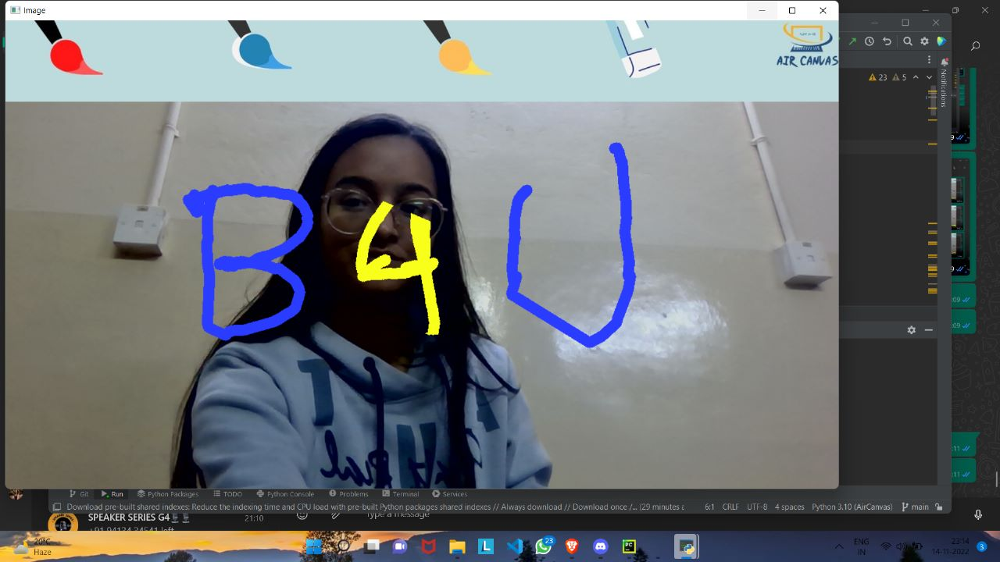
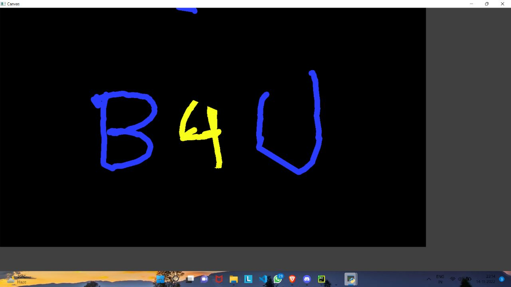

1 / 3

,
2 / 3

.
3 / 3

.
In the era of digital world, traditional art of writing is being replaced by digital art. Digital art refers to forms of expression and transmission of art form with digital form. Relying on modern science and technology is the distinctive characteristics of the digital manifestation. Traditional art refers to the art form which is created before the digital art. Digital art and traditional art are interrelated and interdependent. The traditional way includes pen and paper, chalk and board method of writing. The essential aim of digital art is of building hand gesture recognition system to write digitally. Digital art includes many ways of writing like by using keyboard, touch-screen surface, digital pen, stylus, using electronic hand gloves, etc. But in this system, we are using hand gesture recognition with the use of machine learning algorithm by using python programming, which creates natural interaction between man and machine.
This is the most exciting part of our system. Writing involves a lot of functionalities. So, the number of gestures used for controlling the system is equal to these number of actions involved. The basic functionalities we included in our system are :
1. Writing Mode - In this state, the system will trace the fingertip coordinates and stores them.
2. Colour Mode – The user can change the colour of the text among the various available colours
3. Backspace - Say if the user goes wrong, we need a gesture to add a quick backspace.